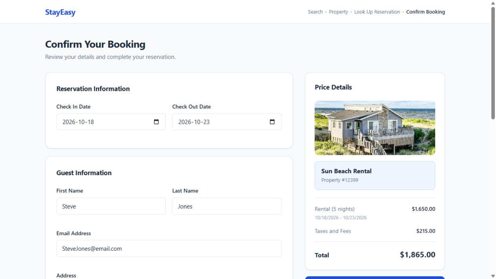

Professional work and personal development, with context about what each example demonstrates.
Professional work · Public demo
Safely SDK demo
● ● ●demo.safely.com/be

Live-site capture · October 2026
Embedded SDK · Travel insurance · Swagger · Anthropic Claude
The problem
Travel insurance needed to fit into a host booking experience while connecting to Safely’s external APIs.
The contribution
Designed and engineered a standalone TypeScript SDK and demo booking application, bringing together the embedded interface, API integration, and end-to-end implementation.
The result
A public demo provides a concrete example of the booking experience and integration work. Production source code remains private; broader Angular and Java/Spring Boot responsibilities are covered on the About page.
A long-running family fantasy league needed a focused view of current standings and a foundation for preserving its history.
The contribution
Built a React/TypeScript dashboard and a Node.js API on Vercel that fetches ESPN data, validates it, and normalizes it into typed league models. Authentication cookies stay on the server.
The result
A deployed dashboard connected to a 12-team ESPN league, with sortable standings, wins-losses-ties records, scoring statistics, and accessible team details.
Table sorting preserves official rank and the current leader.
Loading, retry, and a clearly labeled sample fallback handle unavailable upstream data.
Automated tests cover API normalization, safe errors, and standings sorting.
Historical achievements are shown as unavailable until verified history is connected. Dedicated navigation and Supabase/PostgreSQL persistence remain planned.